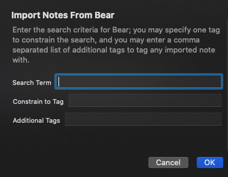

@jessegray, just in case you haven’t got the Python approach working yet, and for anyone else looking to do this in the future I’ve been working on some updates to the ThoughtAsylum Action Group Suite, and along with a whole new class for TADpoLe for working with the Bear URL-scheme “API”, I’ve added a set of actions for working with Bear.
The ThoughtAsylum - Export/Import/Share action group contains a couple of actions that work directly with Bear to import notes into Drafts (there’s also an export too for those wanting to send a draft to Bear with Drafts tags intact). You can find the Bear-related actions in the Bear section of that action group.
TAD-Import Note From Bear
Enter the ID of the Bear note to import and specify any additional tags that should be applied to it. All Bear tags will be copied across as drafts tags. The creation date will also be copied across.
TAD-Import Notes From Bear
Enter a set of search criteria to run against Bear. All matching (non-trashed) notes will be (bulk) imported into Drafts. All Bear tags on a note will be copied across along with the content of the note. The creation date will also be copied across.
@jessegray, if you are still looking, this second one is probably the one you would be most interested in as you are looking to import all notes. Run the action, leave the search term and tag blank. Consider adding some tags of your own (e.g. “import, bear”), and then let Drafts request the details of each note and build a draft for it.

If you want to just run a quick test, try setting a specific tag or specific search term to bring across a small sub-set of notes. I don’t use Bear much, so my scale of notes isn’t that far into double figures. Should volume be an issue for anyone, then I would suggest batching up notes by using the search and tag constraint criteria to bring the notes over in groups.
Hope people find the Bear stuff useful.
FWIW, the ThoughtAsylum - Export/Import/Share action group also has an action in it for importing files, maintaining creation time (based on file creation), and importing front matter specified tags.
TAD-File Import With Tags
Import files into Drafts, transferring file creation and modification timestamps, as well as specifying and importing simple front matter tags.